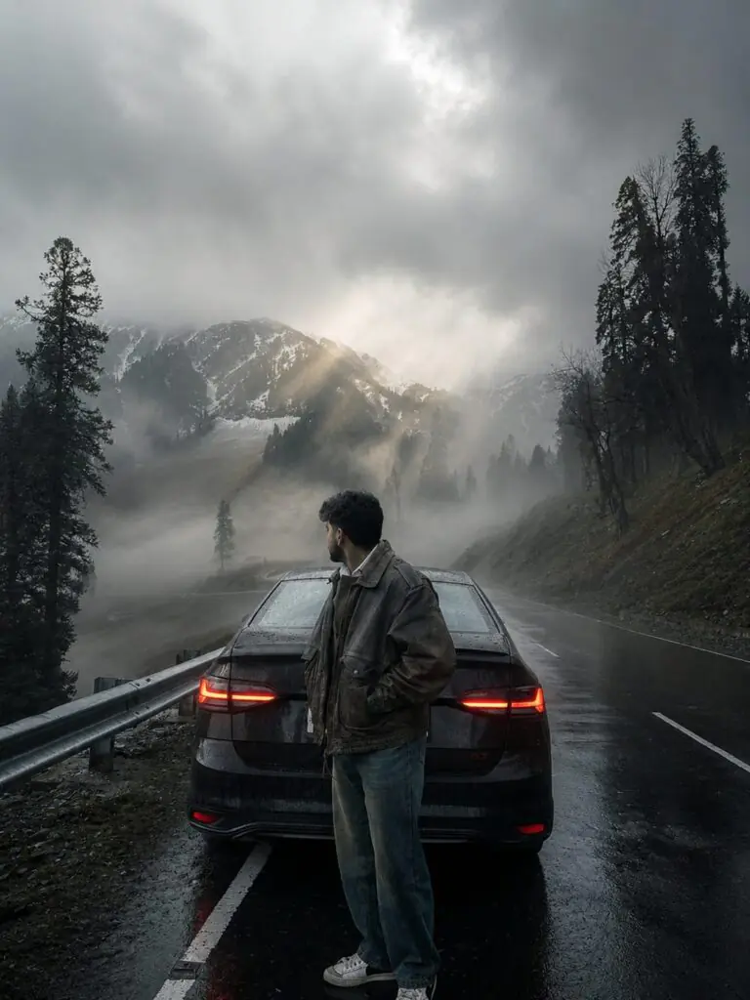

Fog photography has become one of the most popular trends in AI image generation and photo editing. The soft mist, dreamy atmosphere, and cinematic lighting create a unique mood that instantly makes any image look professional and eye-catching.
An Ultra Realistic Asthetic Fog Style Photo Prompt helps generate stunning visuals with realistic fog, natural lighting, atmospheric depth, and detailed landscapes. Whether you are using ChatGPT, Gemini, Midjourney, or any AI image tool, the right prompt can transform an ordinary photo into a breathtaking masterpiece.
In this article, we will explore the key elements of a realistic fog-style prompt and learn how to create cinematic, high-quality images that look like they were captured by a professional DSLR camera
Want more awesome prompts?
Join our community and get the latest viral prompts daily.
Transform this image into a breathtaking ultra -realistic foggy forest masterpiece. Add dense natural white fog covering the entire environment, creating a mysterious and cinematic atmosphere. Apply rich forest-inspired color grading with deep emerald green, dark teal, moss green, and earthy brown tones. Enhance the trees, foliage, and background elements to resemble a lush enchanted forest hidden in the mist. Introduce soft volumetric light rays subtly penetrating through the fog, creating depth and realism. Increase overall image quality to ultra-high -definition 4K resolution with razor-sharp details, HDR enhancement, realistic textures, balanced contrast, and natural color harmony. Improve shadows, highlights, and dynamic range while maintaining a realistic appearance. Add a moody woodland aesthetic, dreamy fog layers, atmospheric perspective, and professional cinematic photography grading. The final result should look like a premium DLR forest photograph captured during a coldmist.
? AI PROMPT
Moody Nature, Dense Fog Weather, Volumetric Lighting, HDR, Ultra Realistic, Professional Color Grad, 4K Quality, DSLR Shot, Atmospheric Depth, Photorealistic!
? AI PROMPT
Use the uploaded image as the base photo. Transform it into an ultra-realistic cinematic foggy forest masterpiece with dense natural white fog, layered atmospheric mist, and a mysterious woodland ambience. Apply premium forest color grading using deep emerald green, dark teal, moss green, earthy brown, muted highlights, and rich natural contrast. Enhance trees, foliage, and the landscape into a lush enchanted rainforest while preserving realism. Add soft volumetric light rays filtering through the fog to create cinematic depth and atmospheric perspective.
Upgrade the image to ultra-HD DSLR quality with razor-sharp details, HDR, realistic textures, balanced exposure, refined shadows and highlights, smooth tonal transitions, natural color harmony, and professional Lightroom-style grading. Enhance realism with subtle humidity, dreamy haze, immersive depth, and a cold misty morning mood. The final result should resemble a premium DSLR landscape photograph with a photorealistic, National Geographic-style cinematic forest aesthetic.
Style: Cinematic Forest Photography, Dense Natural Fog, Moody Nature, Volumetric Lighting, HDR, Ultra Realistic, Professional Lightroom Color Grading, DSLR Quality, Atmospheric Depth, Photorealistic, 4K.
? AI PROMPT
The ORIGINAL SUBJECT is the primary visual focus of this transformation.
Preserve the subject with absolute pixel-level fidelity.
The subject must remain the sharpest, most visually dominant element in the frame while preserving every original detail exactly as photographed.
Do NOT regenerate, reinterpret, beautify, or modify the subject in any way.
Enhance only the cinematic lighting interaction and color rendering on the subject while keeping identity, pose, clothing, facial features, skin texture, body proportions, and placement completely unchanged.
The background must remain fully intact with all original environmental details preserved naturally. Apply only cinematic depth, premium color separation, atmospheric realism, and filmic rendering without altering or replacing any landscape elements.
Apply a premium luxury cinematic color grade inspired by ARRI Alexa Mini LF, Kodak Vision3 500T, Kodak 2383 Print LUT, Leica Color Science, and DaVinci Resolve. Produce rich yet natural colors with elegant tonal separation, warm golden highlights, cool cinematic shadows, smooth highlight roll-off, deep organic contrast, realistic color depth, and a refined feature-film finish. The result should feel visually striking, immersive, and luxurious without appearing oversaturated, HDR, or artificially processed.
? AI PROMPT
Transform this image into a breathtaking ultra-realistic foggy forest masterpiece. Add dense natural white fog covering the entire environment, creating a mysterious and cinematic atmosphere. Apply rich forest-inspired color grading with deep emerald green, dark teal, moss green, and earthy brown tones. Enhance the trees, foliage, and background elements to resemble a lush enchanted forest hidden in the mist. Introduce soft volumetric light rays subtly penetrating through the fog, creating depth and realism.
Increase overall image quality to ultra-high-definition 4K resolution with razor-sharp details, HDR enhancement, realistic textures, balanced contrast, and natural color harmony. Improve shadows, highlights, and dynamic range while maintaining a realistic appearance. Add a moody woodland aesthetic, dreamy fog layers, atmospheric perspective, and professional cinematic photography grading. The final result should look like a premium DSLR forest photograph captured during a cold misty morning, with ultra-realistic details, immersive depth, soft natural lighting, and stunning visual quality.
Style: Cinematic Forest Photography, Moody Nature, Dense Fog Weather, Volumetric Lighting, HDR, Ultra Realistic, Professional Color Grading, 4K Quality, DSLR Shot, Atmospheric Depth, Photorealistic.

? AI PROMPT
Ultra-realistic moody nature landscape, dense fog and mist, volumetric god rays, realistic weather, soft diffused natural light, HDR, atmospheric depth, wet foliage, cinematic color grading, DSLR photography, ultra-detailed textures, natural shadows, photorealistic, 4K, sharp focus, National Geographic style, realistic fog scattering, breathtaking atmosphere.
Ultra Realistic Asthetic Fog Style Photo Prompts are perfect for creating cinematic and emotional images with a natural, professional look. By combining realistic fog effects, soft lighting, detailed textures, and atmospheric depth, you can produce stunning visuals that stand out on social media and creative projects.
The secret to great fog photography is balancing realism with artistic mood. Small details such as mist scattering, wet surfaces, natural shadows, and soft color grading can make a huge difference in the final result.
Use the techniques and prompt ideas shared in this guide to create your own breathtaking fog-style images and bring a new level of realism to your AI-generated artwork.